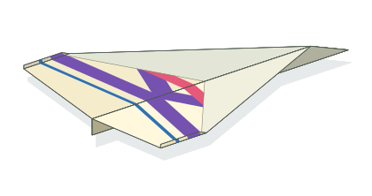

Recortar y plegar
Mariposas
Elige una mariposa real, dale color a las alas y sigue las imágenes. En el mismo taller puedes elegir aletas traseras ajustables o un cuerpo plegado que puedes sujetar para lanzarla.

Taller de vuelo en papel
Un taller gratuito para niñas y niños de 5 a 12 años y quienes los acompañan. Convierte una hoja en una mariposa o un avión. Cambia un pliegue y descubre dónde aterriza.

Para casa o el aula
Elige mariposas y aviones, firma la portada e imprime las plantillas a tamaño real. Anota los aterrizajes en tu diario y vuelve a la misma selección con el código QR.
La colección
Empieza con lo que tengas a mano. Cada modelo tiene su propia mesa de trabajo.
Recortar y plegar
Elige una mariposa real, dale color a las alas y sigue las imágenes. En el mismo taller puedes elegir aletas traseras ajustables o un cuerpo plegado que puedes sujetar para lanzarla.
Hoja entera · solo pliegues
Basta una hoja de papel. Sigue los pliegues, da forma a las alas y prueba un avión inspirado en la historia de la aviación.

En paralelo
Compara las alas, los materiales y los pliegues de dos modelos. Imprime la ficha y marca dónde toca el suelo cada uno.
En casa o en clase
Escoge un lugar para aterrizar. Haz una predicción. Lanza con suavidad, cambia una sola cosa y vuelve a lanzar desde el mismo sitio.
Descargar la actividad familiar ↗Pide ayuda con las tijeras y los pliegues difíciles. Señala dónde crees que aterrizará.
Marca cinco aterrizajes. Cambia una aleta de cola y observa qué ocurre en los cinco siguientes.
Pregunta qué podría enseñaros el siguiente vuelo. Deja que el niño o la niña elija qué cambiar.
Biblioteca abierta
Imprime a tamaño real. Comprueba la barra de 50 mm en las mariposas y de 20 mm en los aviones. Puedes personalizar cada modelo en el taller.
Elige el diseño y el formato que usa tu impresora.
Laboratorio de motores
Descubre el módulo original que se maneja desde el móvil, explora los componentes de una alternativa abierta e imprime una maqueta para probar el encaje en un avión de papel.